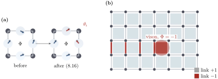

Advanced Quantum Materials 2027 · All lectures · Lecture notes
Session 8. Quantum Magnetism, Spinons and Kondo Physics
8.10 Emergent gauge symmetry and vison excitations
There is one more essential part of the QSL picture, and it comes directly from the fact that we introduced fermions to describe a spin. Let us take a local phase rotation of the auxiliary fermions that depends on the site,
\[f_{i\sigma} \;\to\; e^{i\theta_i}\, f_{i\sigma}, \qquad f^\dagger_{i\sigma} \to e^{-i\theta_i} f^\dagger_{i\sigma}. \tag{8.16}\]
Both the physical spin operator (8.10) and the single-occupancy constraint (8.11) do not change at all under (8.16). The phase \(e^{i\theta_i}\) cancels between \(f^\dagger_{i\alpha}\) and \(f_{i\beta}\) in every term, so the Hamiltonian and the physical spin operators are exactly invariant. The mean-field bond variable \(\chi_{ij}\), however, is not invariant, since it gets a relative phase, \(\chi_{ij} \to e^{i(\theta_i - \theta_j)}\chi_{ij}\). This is the structure of a lattice gauge theory. The variable \(\chi_{ij}\) behaves as a link variable, and (8.16) is a local transformation, which is called a gauge transformation. The physical spin theory is invariant under it, while the mean-field saddle point of Section 8.9 is not. Any two choices of \(\chi_{ij}\) that are related by (8.16) describe the same physical quantum spin liquid, so the mean-field decoupling only fixes a class of gauge-equivalent solutions and not a unique set of hoppings. This redundancy is the origin of an emergent gauge theory for quantum spin liquids.
Once we see this gauge structure, \(\chi_{ij}\) becomes a dynamical field on the links of the lattice, and it can have its own topological defects. This is in direct analogy with the superconducting order parameter, whose gauge degree of freedom can have vortices. Let us write the mean-field Hamiltonian as \(\mathcal H = \sum_{ij,s}|\chi_{ij}|e^{i\theta_{ij}}f^\dagger_{i,s}f_{j,s}\), and let us define the flux through a plaquette as the product of the phases that we pick up when we go around its boundary, \(\Phi = \prod e^{i\theta_{ij}}\). For concreteness, let us take a square lattice where the hoppings around every elementary loop pick up the phase \(\Phi=+1\), which is a ground state, except for one loop, where the phase is \(\Phi=-1\). This single flipped plaquette is an excited state. It is a topological defect in the emergent gauge field, and it is called a vison. The vison is the excitation of the gauge sector, and in general it is coupled to the spinon excitations of the matter sector that we built in Section 8.9. In this language, a quantum spin liquid is described not only by its spinon dispersion but also by an emergent gauge theory and by the vison excitations of that theory. This is a new organizing principle, and nothing like it exists in the symmetry-broken magnets of Session 6. There is no notebook exercise for this construction, which is a purely conceptual and formal part of the QSL picture. Figure 8.5 shows both parts of it, why the flux and not the link variable is the physical quantity, and what a single flipped flux looks like on the lattice.

Which of these objects changes under the local phase rotation (8.16)?
Show the answers
- A. ✗ False
This is false. The constraint counts \(f^\dagger_{i\uparrow}f_{i\uparrow}+f^\dagger_{i\downarrow}f_{i\downarrow}\) on a site. Each term has \(e^{-i\theta_i}e^{i\theta_i}=1\), so the count is the same.
- B. ✗ False
This is false. It is built from \(\mathbf S_i\cdot\mathbf S_j\), and each \(\mathbf S_i\) is unchanged. For \(\theta_i=\pi/2\) on one site, \(f^\dagger_{i\uparrow}f_{i\downarrow}\) still gets \((-i)(i)=1\).
- C. ✓ True
This is true. The phases cancel in every product \(f^\dagger_{i\alpha}f_{i\beta}\) on the same site, so the spin operator and the constraint do not change. Only the link variable between two sites picks up a phase, and this is what makes it a gauge field.
We rotate the phase of the fermions on the four sites of a plaquette with arbitrary angles \(\theta_i\). How does the flux \(\Phi\) through it change?
Show the answers
- A. ✗ False
This is false. Take the same angle \(\theta\) on the four sites. Every link gets \(\theta-\theta=0\), so nothing changes, while the sum would be \(4\theta\).
- B. ✓ True
This is true. Going around the plaquette we pick up \(\theta_i-\theta_j\) on each link, and the sum telescopes to zero. The flux is physical, and this is why the vison, which is a plaquette with \(\Phi=-1\), cannot be removed.
- C. ✗ False
This is false. Take \(\theta_1=\pi/2\) and the other angles zero. The link \(12\) gets \(e^{i\pi/2}=i\) and the link \(41\) gets \(e^{-i\pi/2}=-i\), and the product is \(1\), so \(\Phi\) keeps its sign.